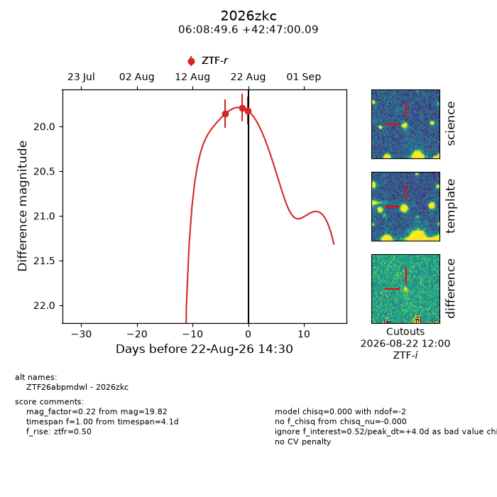
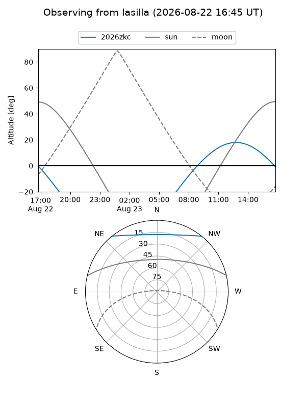
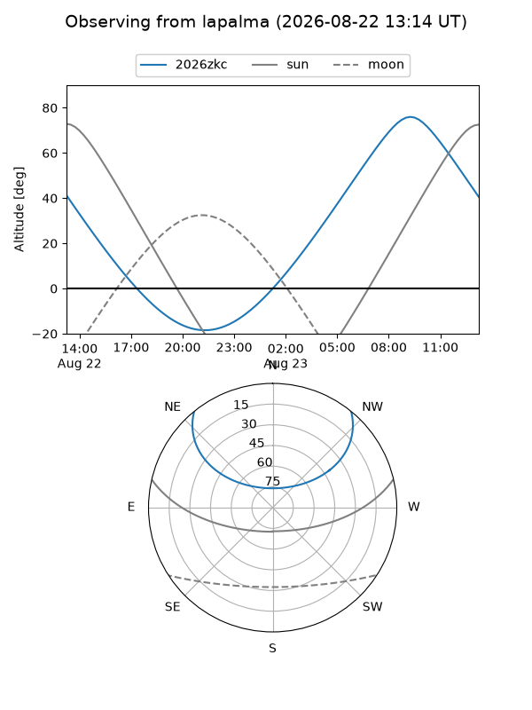
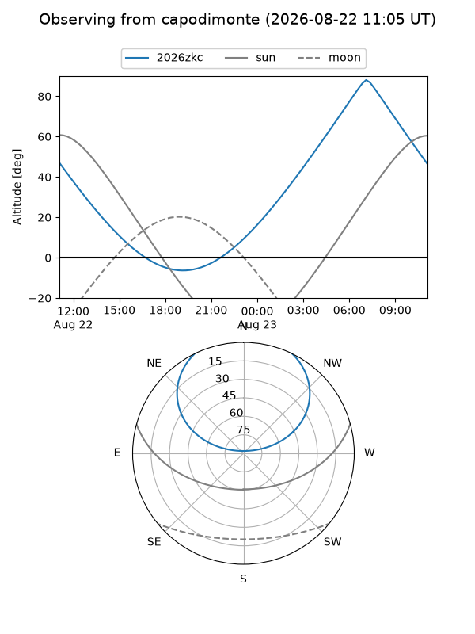
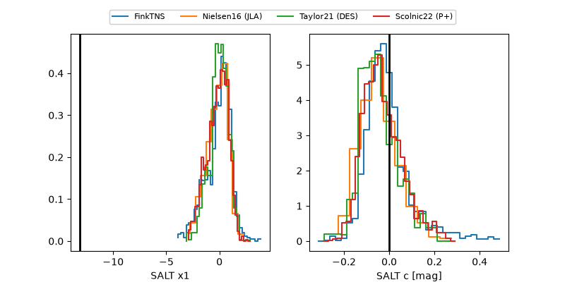

2026zkc
Target 2026zkc at 2026-08-22 14:33
Aliases and brokers:
FINK-ZTF: ztf.fink-portal.org/ZTF26abpmdwl
Lasair-ZTF: lasair-ztf.lsst.ac.uk/objects/ZTF26abpmdwl
ALeRCE-ZTF: alerce.online/object/ZTF26abpmdwl
YSE-PZ: ziggy.ucolick.org/yse/transient_detail/2026zkc
TNS name: wis-tns.org/object/2026zkc
Direct TNS query: direct search
alt names
ZTF26abpmdwl (ztf,fink_ztf)
2026zkc (tns,yse)
Coordinates:
equatorial (ra, dec) = 92.2066,+42.78336
equatorial (HMS+DMS) = 06:08:49.58,+42:47:00.09
galactic (l, b) = (170.1979,+10.89267)
Flags:
TNS type: nan
peak dt: +4.0
Photometry:
last ztfr=19.82
3 ztfr detections
Lightcurve

Visibility



Additional plots
